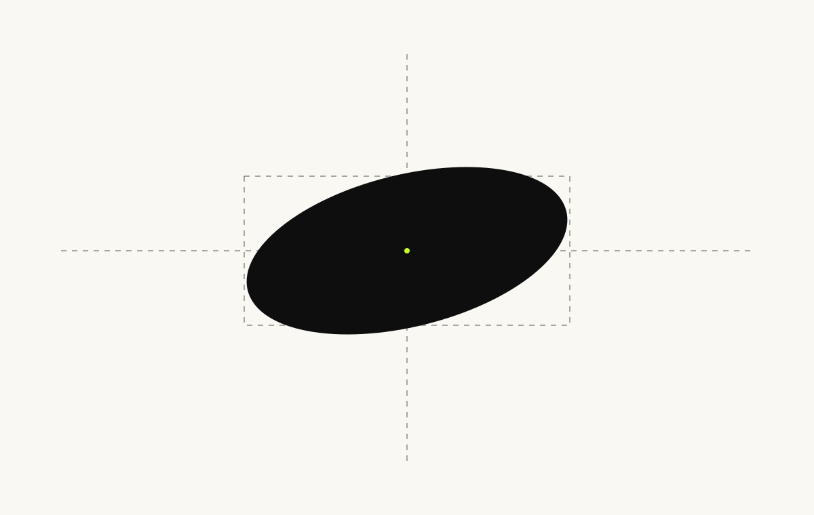
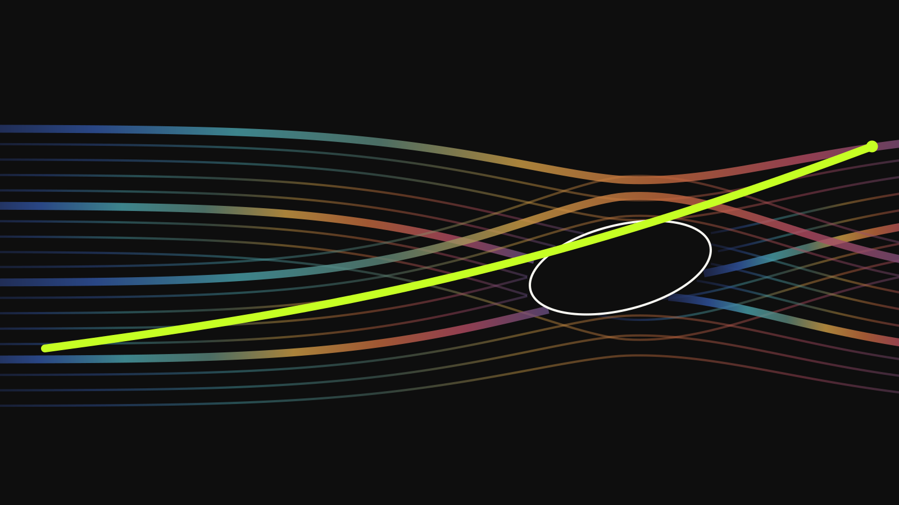

Astronomical Atlas / Precision Panel
Precision Panel

Bizarre Industries / Open Design / PRIVATE WORKING BUNDLE
This source is nonpublishable while the owner-selected Continuous Lens Aperture v2 remains governed-provisional. No PDF is emitted until numerical geometry and production evidence are approved, selected fonts are embedded, and page raster comparison passes.
Astronomical Atlas / Precision Panel
Astronomical Atlas / Textures
Texture is a representation of the same governed field, not decoration and not a second accent system. Each sample below retains the provisional aperture lineage and synthetic source record.

2e5bfb31678771673a9ede8791f605ab21fba833de406e48d0db69f64dfbd79dsynthetic / derivative
139317530e061764c9c8b3339f395f5785478c577f740e12e24771a7bd491a85synthetic / derivative
8105397925fa8ceaaeb8c3f5a7d54a5aa986add138bb8887e1a179d924b99670synthetic / derivativeAstronomical Atlas / Aperture

The silhouette is a fixed smooth, tangent-continuous vector with no chamfer, notch, wedge, corner, or straight segment. Any physical bevel is a separate material study and never changes the opening. Media is contained at full width; the aperture is never used as a cover crop.
bb4079e12e6db7bb2387dc7fbe174b3283b57d5af4d4e942e4053bd96158c9ddAstronomical Atlas / Motion

Approach, Compress, Eclipse, Lock, and Release map directly to canonical phase leaves. Under reduced motion the final captured state is rendered immediately; the sequence is not left blank and does not traverse the field.
Astronomical Atlas / Poster

Bizarre Industries
Make the distant tangible
Astronomical Atlas / Components
This layer wraps existing native interaction infrastructure. The host application owns behavior; Bizarre supplies governed tokens, states, motion, and composition.
MASS X 0.69 / MASS Y 0.53

Contract families: atlas-panel, bilingual-data-panel, calibration-label, instrument-dial, physical-label, signal-action, status-indicator.
Astronomical Atlas / Bilingual
Single-mass synthetic field. Equal semantic priority; English does not become the default source of meaning.
ORIENTATION 18deg
مجال اصطناعي بكتلة واحدة. أولوية دلالية متساوية.
ORIENTATION 18deg
The current Arabic stack is provisional. Public bilingual shipping requires governed font binaries, native Arabic review, and optical-parity evidence. The field preserves physical direction in both reading orders.
Optical-area tolerance: 0.12. Policy status: provisional.
Astronomical Atlas / Production
These are governed minimums, not passed production tests. Every row remains evidence-gated until a real sample or calibrated screen inspection is recorded.
| Profile gate | Current minimum | Evidence |
|---|---|---|
finePrintContour | 0.18mm | NOT VERIFIED |
vinylContour | 1.5mm | NOT VERIFIED |
screenContour | 1px / high salience 2px | NOT VERIFIED |
aperturePrint | 12mm | NOT VERIFIED |
apertureScreen | 48px | NOT VERIFIED |
One-color output is required; lime is not required. Material and spectrum encode environment or data, never a second brand accent.
Astronomical Atlas / Governance
Only the exact Bizarre Industries name and the approved Gravity Well geometry are non-negotiable. The CATCH THE STARS tagline is the current governed tagline; fonts, themes, layout modes, colors, and other identity choices may change only through an explicit versioned revision.
invariantsextensionsfallbacksderivedOutputs| Invariant | Source | Overrideable |
|---|---|---|
company-name | brand/identity.json | No |
gravity-well-geometry | logo/source/original-lockup.svg | No |
gradient-policy — policyinterim-arabic-stack — typographyworkshop-semantic-values — tokensWhere the Atlas extension is silent, the current canonical repository remains authoritative. HTML, CSS, PDF, mockups, Figma, Affinity, and Open Design outputs are derivatives and never become authority.
Astronomical Atlas / Evidence
A PASS appears only when a machine or human evidence reference exists. Unperformed specialist, visual, PDF, and physical checks remain NOT VERIFIED.
| Gate | Status | Evidence |
|---|---|---|
authority-integrityImported Astronomical Atlas authority matches its approved source hash | PASS | authority/SOURCE.json#/sources/design/sha256 |
token-package-integrityBundled token outputs match the canonical token package manifest | PASS | tokens/manifest.json#/files |
ui-package-integrityBundled UI outputs match the canonical UI package manifest | PASS | ui/manifest.json#/files |
approved-asset-integrityEvery bundled asset is approved and matches its governed asset record | PASS | assets/manifest.json#/files |
gravity-well-integrityGravity Well asset is approved and unmodified | NOT VERIFIED | authority/DESIGN.md#release-checklist |
signal-salienceSignal Lime remains the highest-salience operational cue | NOT VERIFIED | authority/DESIGN.md#release-checklist |
spectrum-mappingSpectrum colors map from data or a documented synthetic field | NOT VERIFIED | authority/DESIGN.md#release-checklist |
aperture-geometryContinuous Lens Aperture matches the governed geometry | NOT VERIFIED | authority/DESIGN.md#release-checklist |
far-monochrome-recognitionRecognition works in monochrome at far distance | NOT VERIFIED | authority/DESIGN.md#release-checklist |
singular-lime-trajectoryLime trajectory is singular | NOT VERIFIED | authority/DESIGN.md#release-checklist |
metadata-provenanceMetadata is real or explicitly labeled synthetic | NOT VERIFIED | authority/DESIGN.md#release-checklist |
bilingual-optical-parityArabic and English are optically equal | NOT VERIFIED | authority/DESIGN.md#release-checklist |
interaction-accessibilityFocus, contrast, and reduced-motion states are verified | NOT VERIFIED | authority/DESIGN.md#release-checklist |
production-fine-linesFine lines meet the production profile minimum | NOT VERIFIED | authority/DESIGN.md#release-checklist |
material-functionMaterial effects reveal function or representation rather than decoration | NOT VERIFIED | authority/DESIGN.md#release-checklist |
credible-mockupsMockups use credible physical objects and production logic | NOT VERIFIED | authority/DESIGN.md#release-checklist |
public-bilingual-readinessPublic English and Arabic optical parity and specialist review | NOT VERIFIED | policies/bilingual.json#/release |
manual-visual-reviewRendered manual page-by-page visual comparison | NOT VERIFIED | authority/DESIGN.md#release-checklist |
pdf-print-certificationPDF font embedding and page raster comparison | NOT VERIFIED | authority/DESIGN.md#release-checklist |
fine-print-samplefinePrintContour physical or calibrated display sample | NOT VERIFIED | policies/production.json#/minimums/finePrintContour |
vinyl-samplevinylContour physical or calibrated display sample | NOT VERIFIED | policies/production.json#/minimums/vinylContour |
screen-samplescreenContour physical or calibrated display sample | NOT VERIFIED | policies/production.json#/minimums/screenContour |
aperture-print-sampleaperturePrint physical or calibrated display sample | NOT VERIFIED | policies/production.json#/minimums/aperturePrint |
aperture-screen-sampleapertureScreen physical or calibrated display sample | NOT VERIFIED | policies/production.json#/minimums/apertureScreen |